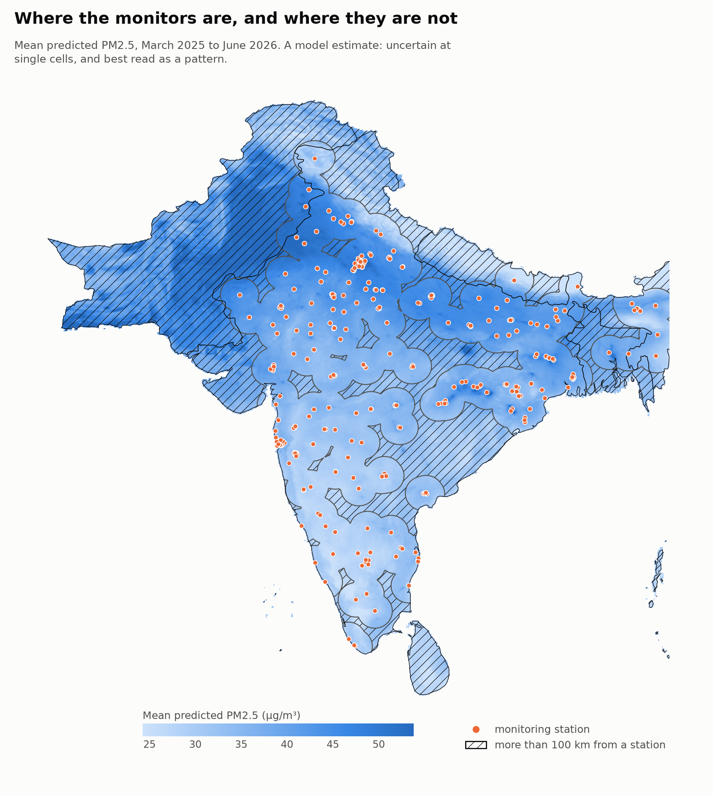
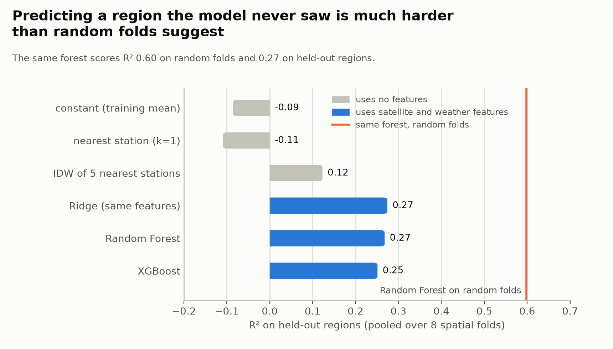
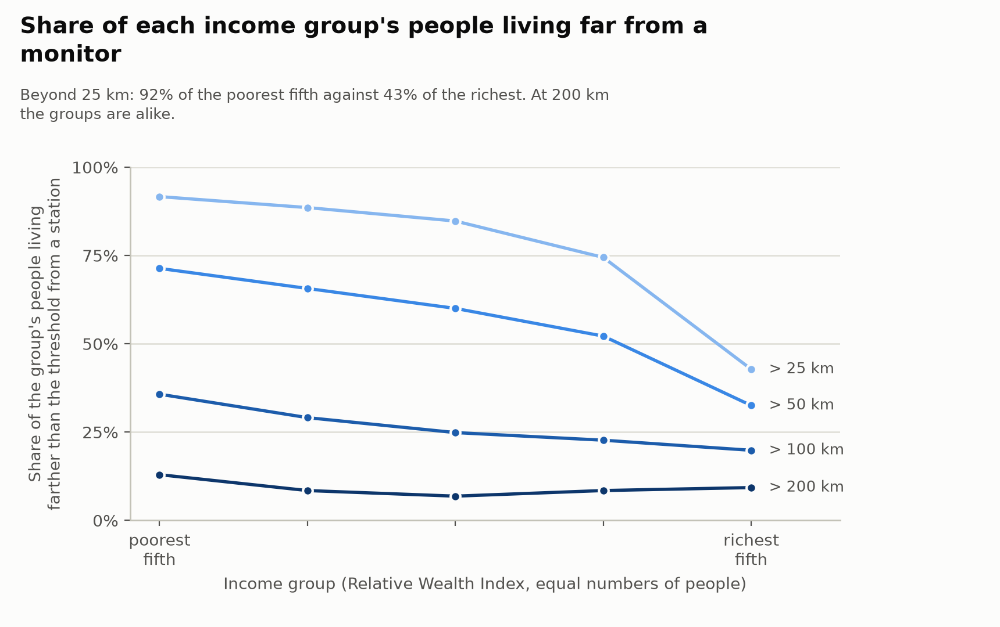
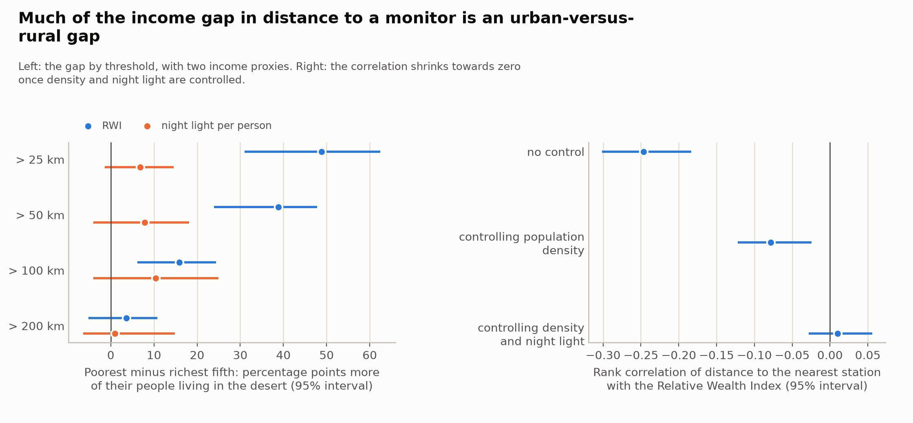
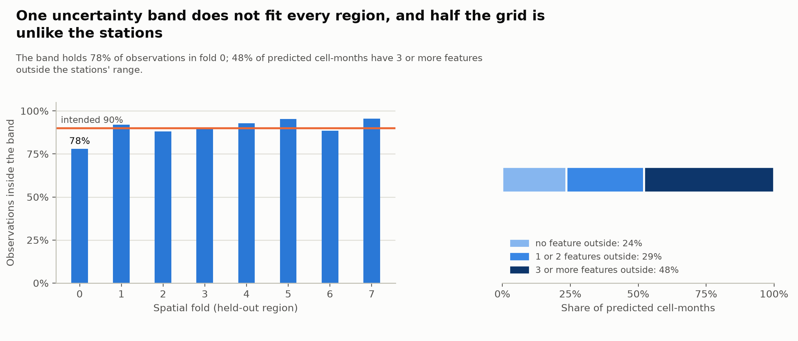

Where are air-quality monitors scarce, are those gaps concentrated among the poor, and how far can a model fill them in? A machine-learning estimate of PM2.5 for every 5 km cell of India, Pakistan, Bangladesh, Nepal and Sri Lanka, checked by holding out whole regions.

Mean predicted PM2.5, March 2025 to June 2026 (a historical average, not a live reading), with the 343 monitoring stations. Hatched: more than 100 km from any station. A model estimate: uncertain at single cells, best read as a pattern. The map stops at 93.4°E.
The monitors are far from many people
The median populated cell is 91 km from the nearest of the 343 stations.
56%
of people live more than 50 km from a monitor
27%
more than 100 km away
45%
of the land area of the five countries is more than 100 km from a monitor
Predicting a region the model has not seen is hard
Scored on random folds, the same Random Forest reaches R² 0.60. Scored the way the model will be used, holding out whole regions, it reaches R² 0.27 (RMSE 27 µg/m³). Random cross-validation more than doubles the apparent skill, because a held-out station usually has a training station a few kilometres away.

The satellite and weather features beat interpolating the nearest stations (paired test, t = 3.4) and are as good with a simple Ridge regression as with a forest or XGBoost, so Ridge is the definitive model. Most of its skill is seasonal and meteorological.
The poor live farther from monitors, mostly because they live outside cities
People are split into five income groups with equal numbers of people, by the Relative Wealth Index.
92% vs 43%
live more than 25 km from a monitor: poorest fifth against richest fifth (gap 49 points, 95% interval 31 to 62)
36% vs 20%
more than 100 km away (gap 16 points); at 200 km the groups are not distinguishable
−0.25 → 0.01
rank correlation of distance and wealth, falling from −0.25 to −0.08 controlling for population density and to 0.01 controlling for density and night-time light

The gap is real but mostly an urban-versus-rural gap: monitors are in dense, lit cities, and cities are richer than the countryside. A second income proxy (night-time light per person) shows gaps of the same sign whose intervals include zero. This is an association over 16 months, not a cause.

Intervals come from a bootstrap over 3° blocks of the map, because neighbouring cells are strongly correlated.
Explore the map
Choose any month of March 2025 to June 2026 with the selector at the bottom left of the map, or view the average of all months. The map also shows the stations, the area far from any station, and the 25 zones where a new monitor would cover the most exposure (predicted PM2.5 times population). The predictions are historical model estimates, not live readings or a forecast. Open it full screen.
What not to over-read
The model is useful as a pattern and a ranking, not as a precise concentration at one cell.

One band does not fit every region. The 90% band holds 78% of observations in the most polluted fold (fold 0). It is not a calibrated interval.
Much of the grid is unlike the stations. 48% of predicted cell-months have three or more features outside the stations' range, where a linear model extrapolates.
Validated at shorter distances than predicted over. Cross-validation tests transfer at about 90 to 230 km from the nearest training station; the 90th percentile for populated cells is 375 km.
Sanity checks mostly pass. The predicted seasonal cycle follows the observed one (correlation 0.98), and 9 of 10 spot-checked places behave as expected. High-altitude Leh does not: the model has no elevation feature.
Proxies and period. The wealth index and night light are proxies for income; the data cover March 2025 to June 2026, with March to June twice, and the maps are averages over that period, not a current reading.
How it works
Monthly PM2.5 from 343 OpenAQ stations (5,222 station-months).
Satellite NO2 and aerosol index (Sentinel-5P), ERA5 weather and the month, built for every one of 434,940 grid cells.
Spatial cross-validation: whole regions held out together, with the fold design checked against the distances the model is used at.
Baselines and models compared with paired tests; Ridge regression chosen as the simplest model in a tie.
Predictions with a residual band and two warning indicators, then desert and equity statistics with block-bootstrap intervals.